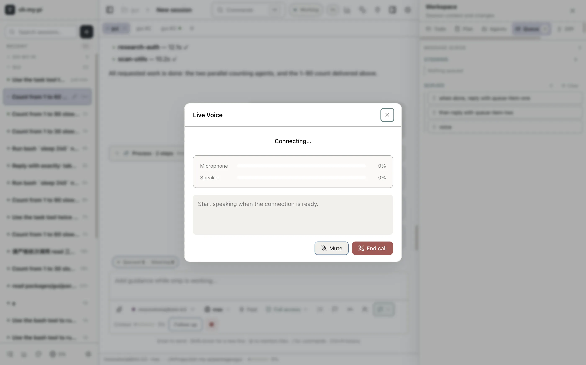
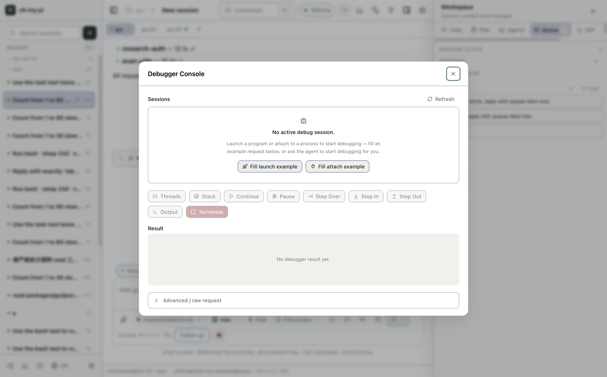
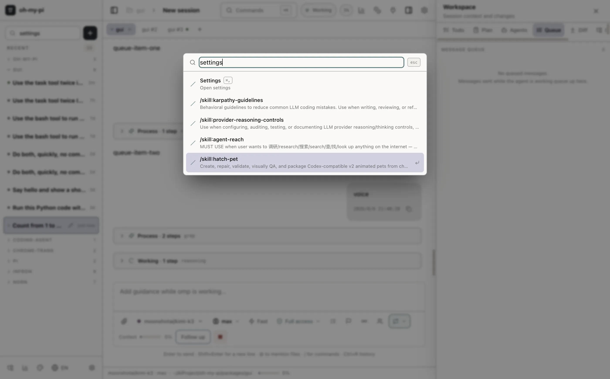

Native, Not a Wrapper
Real interfaces for real workflows
Voice, collaboration, debugging and commands get first-class native surfaces — not a terminal crammed into a webview.

Live voice mode
Real-time speech sessions with live transcripts — talk to the agent while your hands stay on the keyboard.

Collaboration
Bring teammates into a session and watch the agent work together, live.

Structured debug console
The raw RPC event stream — search, filters and pause — for when you need to see exactly what the agent did.

Command palette
Every command, dialog and setting one keystroke away — fully localized, English and Chinese included.